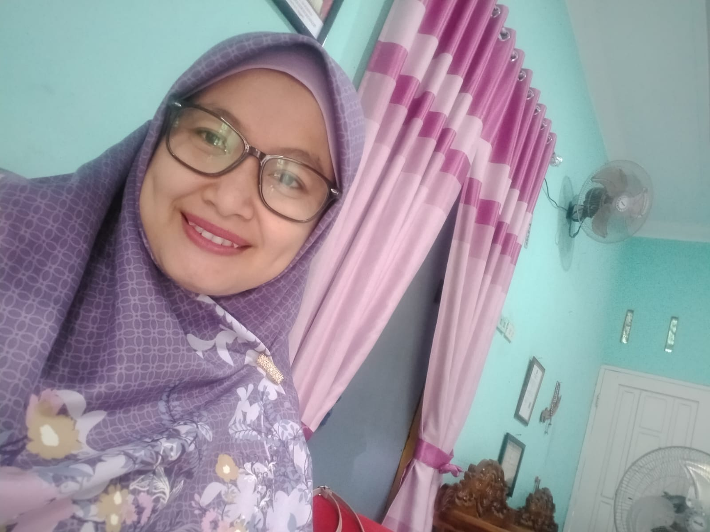
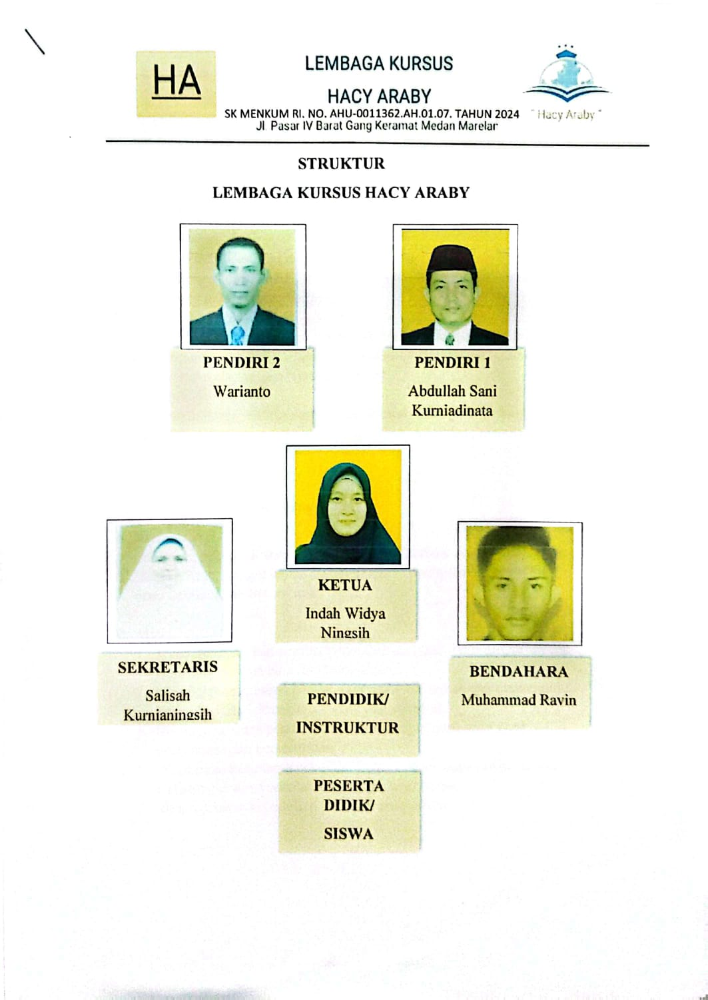

Metode Active Learning Modern
Kuasai Bahasa Arab Lebih Menyenangkan.
Belajar kosa kata dan tata bahasa Al-Qur'an melalui metode audio-visual yang interaktif bersama para pakar lulusan Timur Tengah.
Belajar kosa kata dan tata bahasa Al-Qur'an melalui metode audio-visual yang interaktif bersama para pakar lulusan Timur Tengah.
Kami merancang kurikulum yang membuang materi "pengisi" dan fokus langsung pada kebutuhan komunikasi serta pemahaman teks Al-Qur'an. Belajar jadi lebih cepat dan tepat sasaran.
Menjadi pusat unggulan bahasa Arab yang paling efisien, modern, dan mudah diakses bagi seluruh masyarakat.
Menyederhanakan tata bahasa melalui konsep visual yang mudah diingat.
Mengintegrasikan audio-visual guna memacu daya ingat jangka panjang.
Memastikan santri mampu memahami bacaan Al-Qur'an secara mandiri.

Pakar Active Learning
Beliau telah mengabdikan diri di dunia pendidikan sejak 2006. Sebagai penulis buku-buku agama Islam, ia sangat aktif mengamati dan menerapkan sistem Active Learning dalam mengajarkan Bahasa Arab secara efektif.
Lulusan Univ. Baghdad, Irak
Meraih gelar Doktor di Bidang Hukum Islam. Dengan latar belakang pendidikan di Irak dan pengalaman mengajar yang luas, beliau fokus pada pengaplikasian tata bahasa praktis untuk pemahaman Al-Qur'an.
Kami percaya bahwa belajar Bahasa Arab haruslah interaktif, visual, dan relevan dengan pengalaman harian murid. Segala materi dikemas secara sistematis untuk hasil yang maksimal.

Metode Active Learning yang interaktif dan menyenangkan untuk membangun minat dasar bahasa Arab sejak dini.
Fokus pada pemahaman bacaan sholat dan Al-Qur'an harian dengan kurikulum yang praktis dan efisien.
Program mendalam untuk menguasai struktur kalimat dan tata bahasa Arab secara sistematis.
Bimbingan membaca Al-Qur'an dari dasar (Iqra) hingga lancar dengan tajwid yang benar dan tartil.
Punya pertanyaan seputar program kami?
Lihat Tanya Jawab (FAQ)